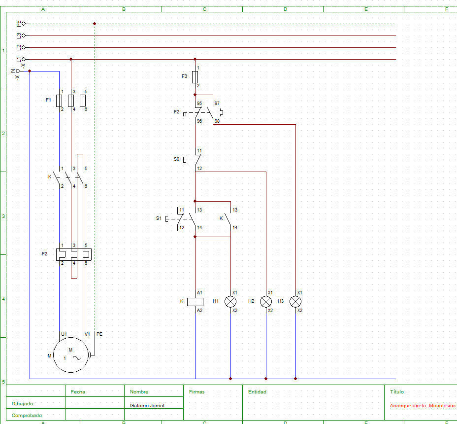
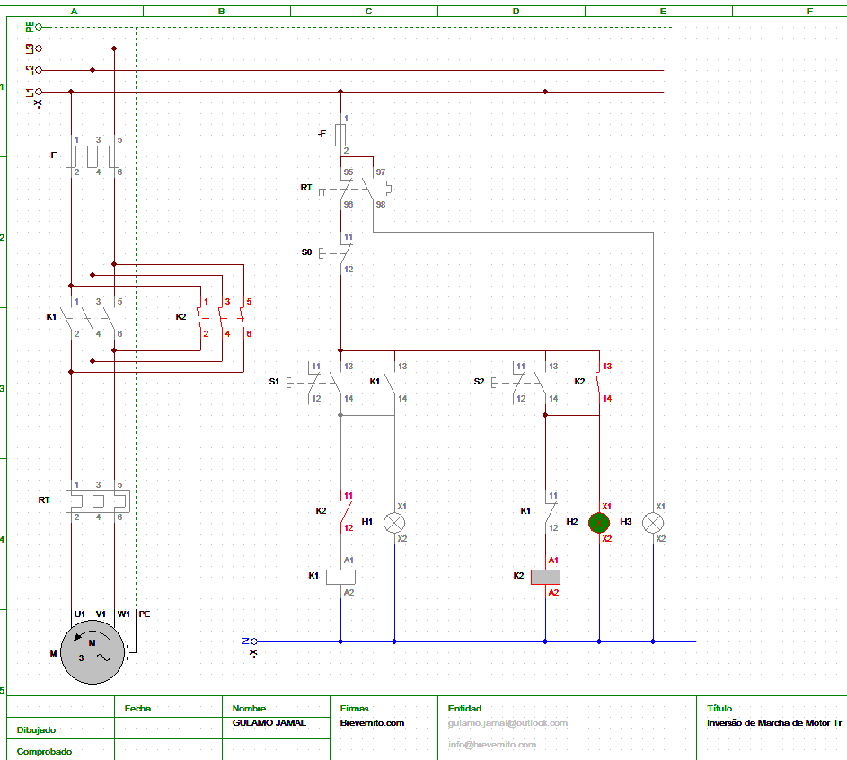
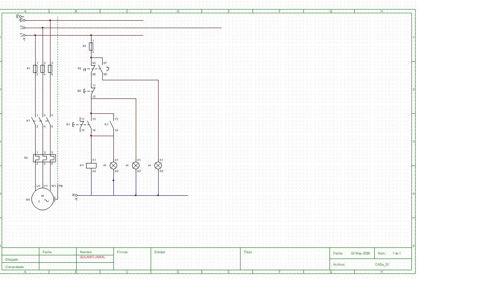

Arranque Directo de Motor Trifásico
Comando de arranque directo com sinalização de estado (pronto, funcionamento, sobrecarga) e protecção contra curto-circuito.
Ver projectoColecção de projectos práticos de comandos eléctricos e circuitos de potência aplicados à indústria: arranque directo, inversão de marcha, arranque sequencial e partida estrela-triângulo de motores.
Comando de arranque directo com sinalização de estado (pronto, funcionamento, sobrecarga) e protecção contra curto-circuito.
Ver projecto
Sistema de comando para arranque directo de motor monofásico, com sinalização e protecção contra sobrecarga e curto-circuito.
Ver projecto
Comando para inversão do sentido de rotação de um motor trifásico, com intertravamento eléctrico e protecção.
Ver projecto
Arranque sequencial manual de três motores trifásicos (M1, M2 e M3), sem relé temporizador.
Ver projecto
Arranque em estrela seguido de transferência automática para triângulo, reduzindo a corrente de arranque do motor.
Ver projecto
Circuito de comando para ligar e desligar uma carga, com indicação visual de estado: pronto, funcionamento e falha.
Ver projectoEste repositório reúne projectos práticos de comandos eléctricos e circuitos de potência, desenvolvidos por Gulamo Jamal para demonstrar conhecimento técnico através de exemplos reais e documentados. Faz parte do portefólio técnico publicado em brevemito.com.
Siga o canal para receber artigos, vagas de emprego e actualizações do Brevemito directamente no seu telemóvel.